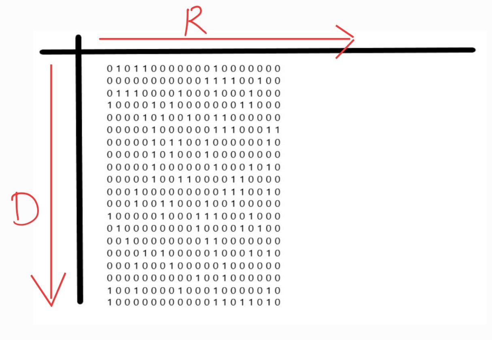

WORKING OF OUR PROJECT
In this project we have implemented a-star and ida-star for finding the shortest and the most optimal
path
from one point to another point in the maze.
The maze is made of 0's and 1's where the 1's act as the path
blocker and the traversal path is defined by the 0's.
We have made use of two movements i.e. DOWN(D) and RIGHT(R).
This is a sample input,

This is the output of the above sample input using A-STAR.

This is the output of the above sample input using IDA-STAR.